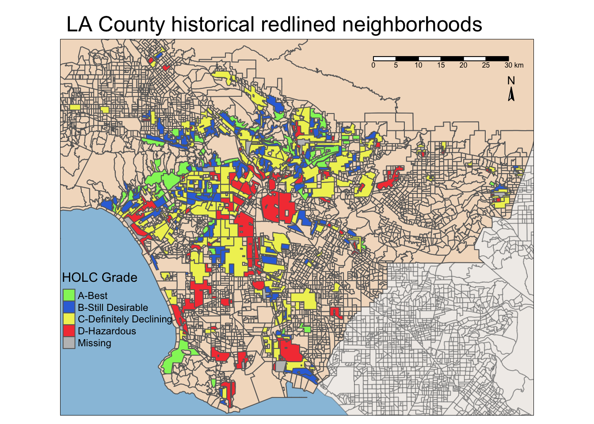
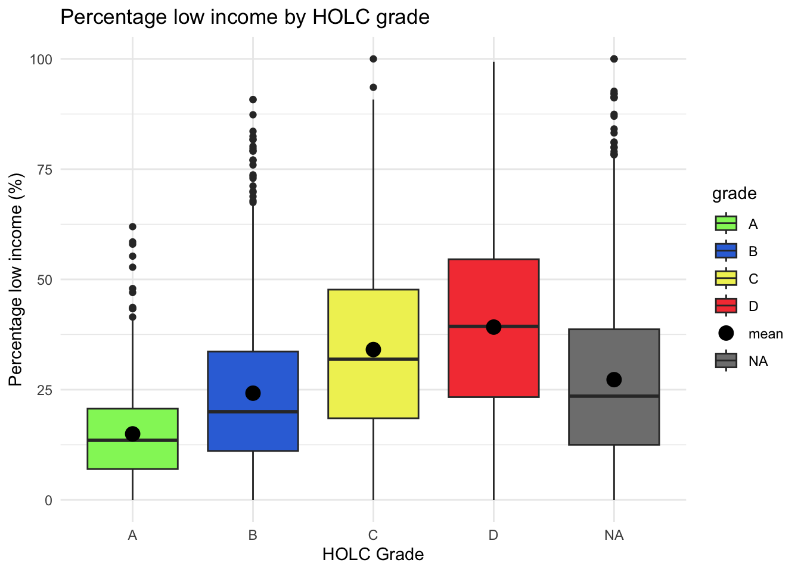
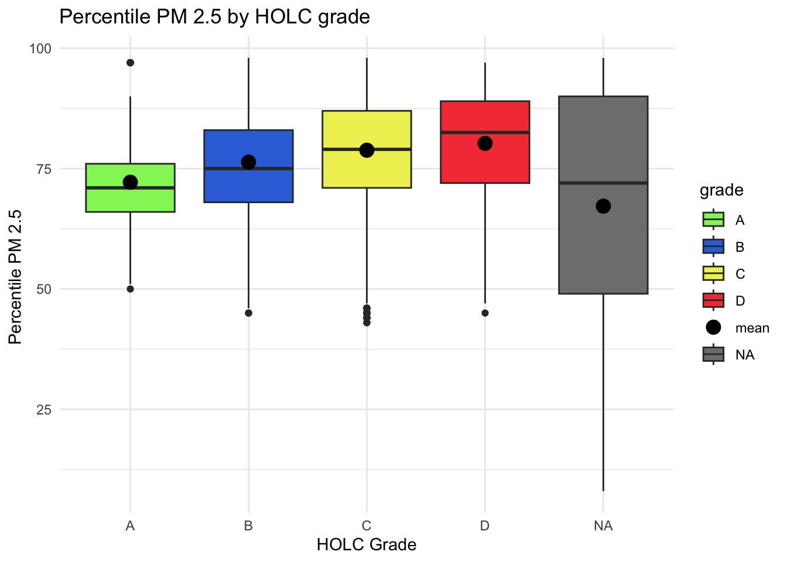
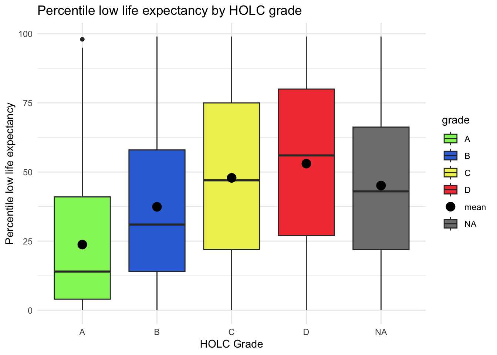
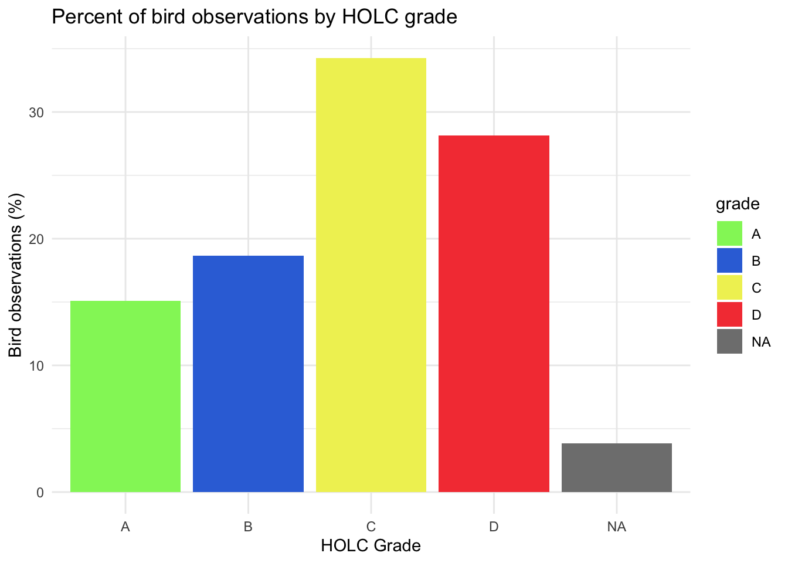

Reveal code
library(sf)
library(here)
library(terra)
library(tmap)
library(tidyverse)
library(viridisLite)
library(RColorBrewer)
library(kableExtra)
library(testthat)
library(patchwork)Exploring patterns of environmental justice
library(sf)
library(here)
library(terra)
library(tmap)
library(tidyverse)
library(viridisLite)
library(RColorBrewer)
library(kableExtra)
library(testthat)
library(patchwork)ejscreen <- sf::st_read(here::here("data", "ejscreen","EJSCREEN_2023_BG_StatePct_with_AS_CNMI_GU_VI.gdb"), quiet = TRUE)
birds <- read_sf(here("data", "gbif-birds-LA", "gbif-birds-LA.shp"))
holc <- read_sf(here("data", "mapping-inequality", "mapping-inequality-los-angeles.json"))# Filter to California
ca <- ejscreen %>%
filter(STATE_NAME == "California" & ! ID %in% c("060379903000","060379902000", "060599901000")) %>%
st_make_valid()
# Filter to LA county
la <- ejscreen %>%
filter(CNTY_NAME == "Los Angeles County" & ! ID %in% c("060379903000","060379902000", "060599901000"))if(st_crs(la) == st_crs(holc)) {
if(st_crs(la) == st_crs(birds)) {
print("Coordinate reference systems match")
}} else {
warning("Coordinate reference systems do not match")
}Warning: Coordinate reference systems do not match# Transform CRS
holc <- st_transform(holc, crs = st_crs(la))
birds <- st_transform(birds, crs = st_crs(la))
ca <- st_transform(ca, crs = st_crs(la))if(st_crs(la) == st_crs(holc)) {
if(st_crs(la) == st_crs(birds)) {
print("Coordinate reference systems match")
}} else {
warning("Coordinate reference systems do not match")
}[1] "Coordinate reference systems match"tm_shape(ca, bbox = holc) +
tm_fill(col = "#f1edea") +
tm_borders(alpha = 0.4,
col = "grey30") +
tm_shape(la, bbox = holc) +
tm_fill(col = "#f3ddc7") +
tm_borders() +
tm_shape(holc) +
tm_fill("grade",
palette = c("#91f366", "#3472db","#f0f061", "#f54242"),
title = "HOLC Grade",
labels = c("A-Best",
"B-Still Desirable",
"C-Definitely Declining",
"D-Hazardous",
"Missing")) +
tm_borders() +
tm_scale_bar(position = c("right", "top")) + # can give a vector of values 0-1
tm_compass(position = c("right", "top"),
size = 1) +
tm_layout(main.title = "LA County historical redlined neighborhoods ",
bg.color = "#99c2dd",
legend.position = c(0, 0.17))
census_group <- st_join(la, holc, join = st_intersects, left = FALSE) %>%
group_by(grade) %>%
summarise(percent = n()/nrow(la)*100) %>%
select(grade, percent) %>%
st_drop_geometry()
kable(census_group,
digits = 2,
format = "simple",
col.names = c("Grade", "Percent of census block groups"),
caption = "Percent of census block groups within HOLC grades",
align = "l")| Grade | Percent of census block groups |
|---|---|
| A | 6.81 |
| B | 18.80 |
| C | 46.41 |
| D | 20.43 |
| NA | 4.49 |
Here, I join holc data into LA county data using st_intersects and an inner join. This is because I am only interested in the redlined areas that intersect with LA county, not those outside it.
la_holc <- st_join(la, holc, join = st_intersects, left=TRUE)Here, I used st_join() to join the redlining data into the LA county EJScreen data. I joined by st_intersects and I set left=TRUE. This allows me to see all of the redlined districts that intersect with LA county. We keep left as TRUE because there are some census block groups (CBGs) that have multiple HOLC assignments to them and we do not want to lose those observations.
Warning: join does not match orginal data dimensions[1] "la has 6589 rows"
[1] "la_holc has 8986 rows"The rows are different because a census block group can have multiple HOLC grade assignments, so the CBGs repeat more than once in the new joined data frame.
# Unit tests to confirm our intuition
expect_true(length(la_holc) > length(la))
expect_equal(length(unique(la_holc$ID)), length(unique(la$ID)))This confirms our intuition that the length of the joined data frame is greater than the length of the original data frame. and the length of unique CBGs in the joined data frame is the same as the length of unique CBGs in the original data frame.
conditions <-la_holc %>%
group_by(grade) %>%
summarise(percent_low_income = mean(LOWINCPCT, na.rm = TRUE)*100,
percentile_pm_25 = mean(P_PM25, na.rm = TRUE),
percentile_low_life_expectancy = mean(P_LIFEEXPPCT, na.rm = TRUE)) %>%
st_drop_geometry()
kable(conditions,
digits = 2,
col.names = c("HOLC Grade", "Percent % Low Income", "Percent Percentile PM 2.5", "Percent Percentile Low Life Expectancy"),
format = "simple",
caption = "Current conditions within each HOLC redlining grade")| HOLC Grade | Percent % Low Income | Percent Percentile PM 2.5 | Percent Percentile Low Life Expectancy |
|---|---|---|---|
| A | 14.98 | 72.16 | 23.76 |
| B | 24.20 | 76.34 | 37.42 |
| C | 34.09 | 78.82 | 47.88 |
| D | 39.19 | 80.24 | 53.04 |
| NA | 27.27 | 67.20 | 45.10 |
Here, I chose to use boxplots of the entire data frame rather than just the means because I believe it is a better visualization that is more informative of the actual distribution across grades. You can still see the median value and the IQR so you can look at trends across the grades.
ggplot(la_holc, aes(x = grade, y = LOWINCPCT*100)) +
geom_boxplot(aes(fill = grade)) +
stat_summary(fun.y=mean,
geom="point",
shape=20,
size=6,
aes(fill="mean")) +
scale_fill_manual(values=c("#91f366", "#3472db","#f0f061", "#f54242", "grey35")) +
labs(title = "Percentage low income by HOLC grade",
x = "HOLC Grade",
y = "Percentage low income (%)") +
theme_minimal()
ggplot(la_holc, aes(x = grade, y = P_PM25)) +
geom_boxplot(aes(fill = grade)) +
stat_summary(fun.y=mean,
geom="point",
shape=20,
size=6,
aes(fill="mean")) +
scale_fill_manual(values=c("#91f366", "#3472db","#f0f061", "#f54242", "grey35")) +
labs(title = "Percentile PM 2.5 by HOLC grade",
x = "HOLC Grade",
y = "Percentile PM 2.5 ") +
theme_minimal()
ggplot(la_holc, aes(x = grade, y = P_LIFEEXPPCT)) +
geom_boxplot(aes(fill = grade)) +
stat_summary(fun.y=mean,
geom="point",
shape=20,
size=6,
aes(fill="mean")) +
scale_fill_manual(values=c("#91f366", "#3472db","#f0f061", "#f54242", "grey35")) +
labs(title = "Percentile low life expectancy by HOLC grade",
x = "HOLC Grade",
y = "Percentile low life expectancy") +
theme_minimal()
These box plots show that, on average, the adverse life and health outcomes of low income, particulate matter exposure, and low life expectancy increase as the HOLC grade decreases(gets worse). This matches with what we expect given the history of redlining and understanding how these grades were assigned as well as how the assignment continued to perpetuate and widen inequity.
holc_bird <- st_join(holc, birds, join = st_intersects, left=TRUE)We join birds into HOLC data via a left join intersect because we want only the bird observations that are present inside the HOLC CBGs
Warning: join does not match orginal data dimensions[1] "holc has 417 rows"
[1] "holc_bird has 135683 rows"The rows do not match here because we are paring down our bird observations to only those within HOLC CBGs.
# Adding unit tests
expect_true(length(holc_bird) > length(holc))
expect_equal(length(unique(holc_bird$area_id)), length(unique(holc$area_id)))This confirms our intuition that the joined data frame has more rows than the original HOLC data because there are multiple bird observations per HOLC area.
bird_final <- holc_bird %>%
filter(year == 2022) %>%
group_by(grade) %>%
summarise(count_birds = n()) %>%
mutate(percent_bird = (count_birds/sum(count_birds))*100) %>%
select(grade, percent_bird) %>%
st_drop_geometry()
kable(bird_final,
digits = 2,
col.names = c("Grade", "Percent of bird observations"),
caption = "Percent of bird observations by HOLC redlining grade",
align = "l")| Grade | Percent of bird observations |
|---|---|
| A | 15.07 |
| B | 18.67 |
| C | 34.27 |
| D | 28.15 |
| NA | 3.84 |
ggplot(bird_final, aes(x = grade, y = percent_bird)) +
geom_col(aes(fill = grade)) +
scale_fill_manual(values=c("#91f366", "#3472db","#f0f061", "#f54242", "grey35")) +
labs(title = "Percent of bird observations by HOLC grade",
x = "HOLC Grade",
y = "Bird observations (%)") +
theme_minimal()
These findings do not match the results of Ellis-Soto et al. 2023, who find that historically redlined areas remain the most undersampled urban areas for bird biodiversity. Contrarily, the results of my histogram suggest that the highest percentage of bird observations occur in HOLC grade C and D. This result could be explained by the fact that we do not consider the total bird observations standardized by the size of the HOLC grade. That is, the area of the C and D grades might be larger than the A and B grades, thus the grades with larger areas will naturally have more bird observations.
tribble(
~Data, ~Citation, ~Link,
"Global Biodiversity Information Facility", "GBIF.org (13 October 2024) GBIF Occurence Download", "[Species API](https://techdocs.gbif.org/en/openapi/v1/species)",
"HOLC Redlining Data", "Nelson, R. K., Winling, L, et al. (2023). Mapping Inequality: Redlining in New Deal America. Digital Scholarship Lab. https://dsl.richmond.edu/panorama/redlining.", "[Mapping Inequality](https://dsl.richmond.edu/panorama/redlining/data)",
"EJScreen: Environmental Justice Screening and Mapping Tool", "United States Environmental Protection Agency. 2024 version. EJScreen. Retrieved: 10/4/24 from www.epa.gov/ejscreen", "[EJScreen Data](https://www.epa.gov/ejscreen/download-ejscreen-data)"
) %>%
kable()| Data | Citation | Link |
|---|---|---|
| Global Biodiversity Information Facility | GBIF.org (13 October 2024) GBIF Occurence Download | Species API |
| HOLC Redlining Data | Nelson, R. K., Winling, L, et al. (2023). Mapping Inequality: Redlining in New Deal America. Digital Scholarship Lab. https://dsl.richmond.edu/panorama/redlining. | Mapping Inequality |
| EJScreen: Environmental Justice Screening and Mapping Tool | United States Environmental Protection Agency. 2024 version. EJScreen. Retrieved: 10/4/24 from www.epa.gov/ejscreen | EJScreen Data |